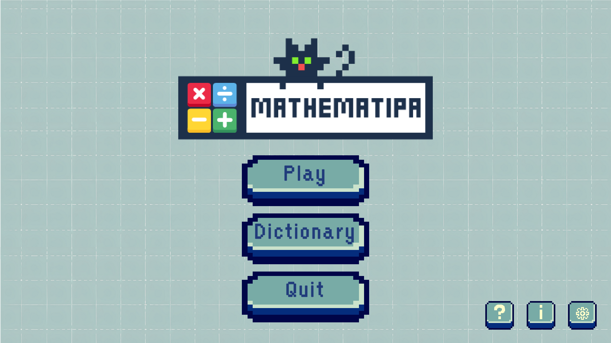
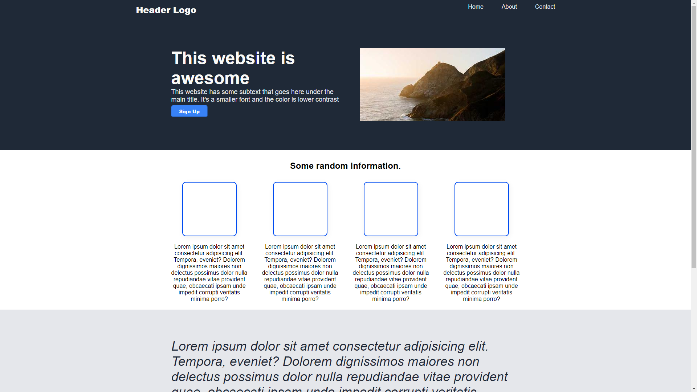
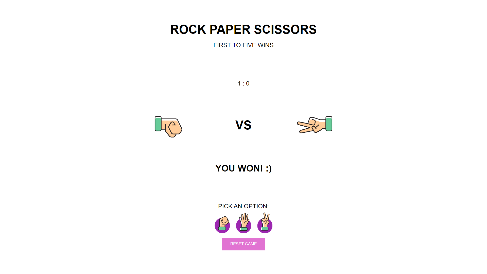
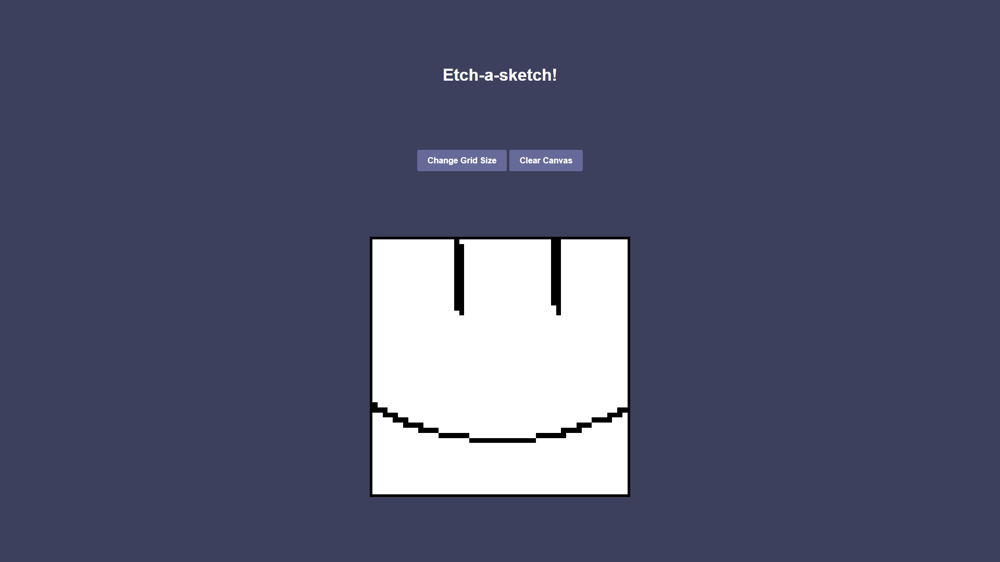

Hello! I am
Adrian Josh Cruz
Aspiring Developer
I recently graduated with a Bachelor of Science in Mathematics with specialization in Computer Science. As an aspiring developer, I've not only relied on formal education but have also learned a lot through self-study. I'm looking forward to exploring new opportunities to enhance my knowledge and skills.Skills
Languages
Currently Learning
Thesis Project

Mathematipa
I took on the role of the lead and sole programmer for this thesis project. This game is directly inspired by Pokémon but with a twist: it integrates mathematics vocabulary to aid learning and familiarization with four fundamental topics in mathematics—namely Algebra, Statistics and Probability, Number Theory, and Geometry.
Small Projects


